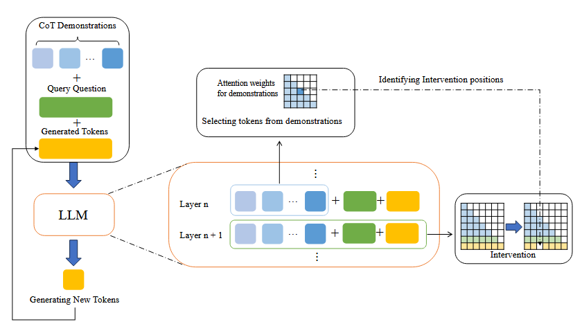
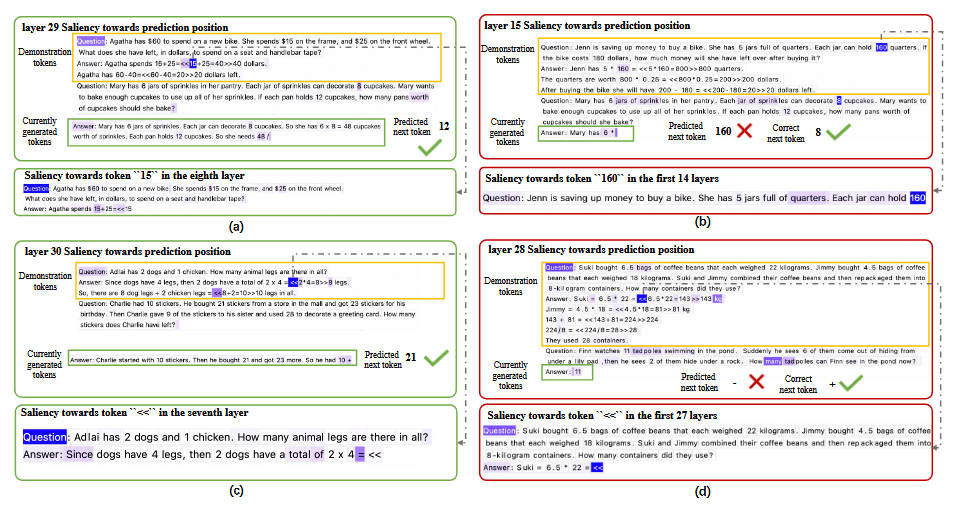

Literature Review: Don't Take Things Out of Context: Attention Intervention for Enhancing Chain-of-Thought Reasoning in Large Language Models
Summary
This paper investigates a critical weakness in few-shot Chain-of-Thought (CoT) prompting for large language models (LLMs): specific tokens or segments within CoT demonstrations can inadvertently distract the model and degrade reasoning performance. The authors identify that LLMs sometimes over-focus on local information from demonstrations, leading to errors by “taking things out of context.” They propose Few-shot Attention Intervention (FAI), a lightweight method that dynamically analyzes and adjusts attention patterns to suppress the distracting effect of such tokens. Extensive experiments across math, commonsense, and symbolic reasoning benchmarks show that FAI consistently improves accuracy, notably achieving a 5.91% gain on the AQuA dataset.

Figure: Overview of the FAI method. FAI identifies and intervenes on distracting tokens in each layer's attention matrix, improving reasoning robustness without significant computational overhead.
Key Insights
-
CoT Fragility and Token Distraction:
While CoT prompting improves LLM reasoning, the paper demonstrates that even single tokens or phrases in demonstrations can mislead the model. This distraction manifests as the model copying irrelevant details or being implicitly biased by local demonstration artifacts, resulting in incorrect answers. -
Mechanism Analysis via Attention Saliency:
The authors use attention saliency techniques to trace information flow within LLMs at each output step. They find that tokens with high self-attention and low aggregation from other tokens are most likely to distract the model, as their semantic content is preserved and directly influences output generation. -
Few-shot Attention Intervention (FAI):
FAI identifies tokens with insufficient information aggregation (i.e., high self-attention) in the demonstration and blocks their attention flow to output tokens during generation. This intervention is efficient, requiring only lightweight computation and affecting about 15% of demonstration tokens on average. -
Empirical Validation:
FAI delivers consistent accuracy improvements across multiple LLMs (GPT2-XL, GPT-NEO, Llama-3-8B/70B) and datasets (GSM8K, AQuA, CSQA, Big-Bench-Hard, Last Letter Concatenation). The most significant boost is observed on math reasoning tasks, where distracting tokens are prevalent. -
Ablation and Robustness Studies:
The paper constructs “GSMgood” and “GSMbad” subsets to isolate the effect of distraction. FAI notably improves performance on GSMbad (samples vulnerable to distraction) without harming GSMgood (robust samples). Contrastive experiments show that blocking all demonstration-to-output attention suppresses both distraction and the positive effect of CoT, while FAI selectively suppresses only the negative. -
Token Analysis:
FAI primarily flags mathematical symbols and numbers as distracting tokens, aligning with the observed error patterns in math reasoning tasks.
Example
Problem:
Mary has 6 jars of sprinkles. Each jar can decorate 8 cupcakes. If each pan holds 12 cupcakes, how many pans should she bake?
Distracting Demonstration:
A prior demonstration included “Each jar can hold 160 quarters,” which the model incorrectly copied, leading to a wrong answer.
With FAI:
FAI identifies “160” as a distracting token and blocks its influence, allowing the model to correctly reason through the current problem without incorporating irrelevant details from the demonstration.

Figure: Attention saliency visualization. Darker cells indicate higher influence. FAI blocks the flow from distracting tokens (e.g., "160") to the output, preventing erroneous copying.
Ratings
| Category | Score | Comments |
|---|---|---|
| Novelty | 4 | The paper identifies and addresses a subtle, underexplored failure mode in CoT prompting, offering a practical and efficient solution. While attention interventions have been studied, their targeted application to CoT distraction is new and insightful. |
| Technical Contribution | 4 | Introduces a lightweight, actionable method (FAI) grounded in a detailed analysis of LLM attention dynamics. Not a new framework, but a significant improvement to prompting strategies. |
| Readability | 3 | The paper is thorough and provides clear figures and tables, but the technical sections (especially on saliency and aggregation coefficients) are dense and could be more accessible to non-experts. The motivation and empirical results are well-explained, but some methodological details are mathematically heavy. |
Enjoy Reading This Article?
Here are some more articles you might like to read next: